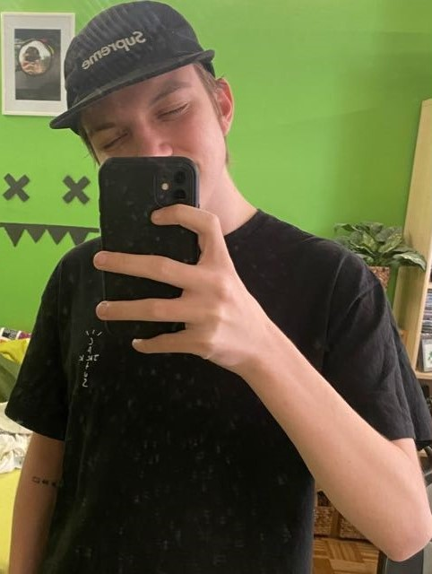
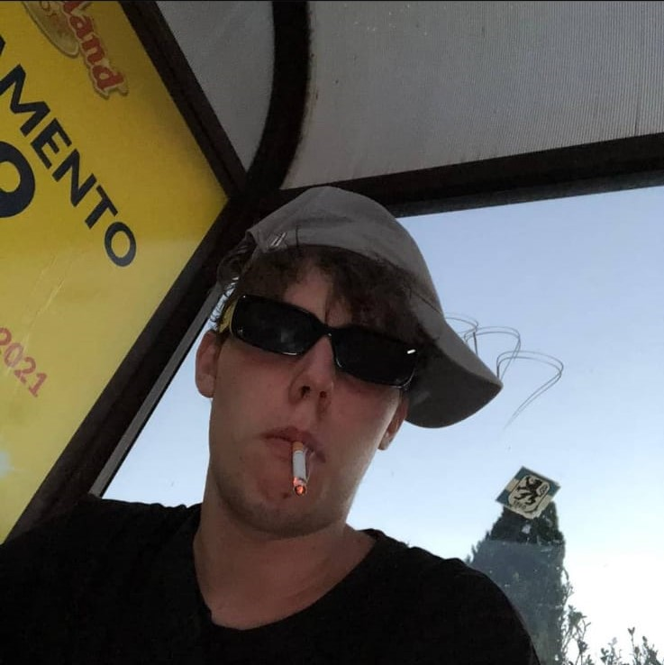
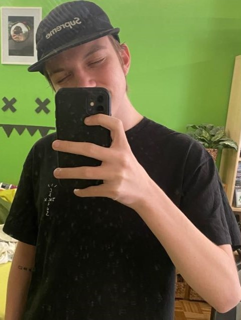
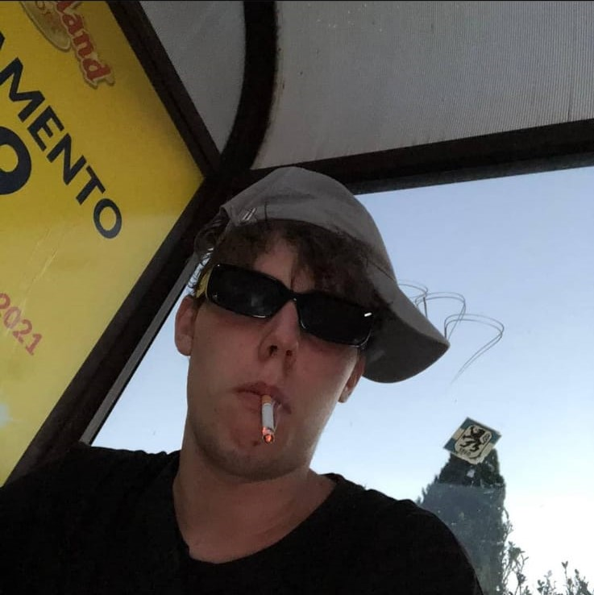

Colitics
Das Team Colitics wurde ursprünglich am 4 Juni 2020 eingeführt, 2 Südtiroler und 1 Tiroler hatten die Idee ein Team zu gründen und mit diesem irgendwann in die 99 Damage League zu schaffen. Der Name stellt sich aus Critical Politics zusammen, dass ist unteranderem auch der Grund warum jedes Teammitglied den Namen eines beliebigen Politikers ausgewählt hat. Mittlerweile umfasst das ganze Team 8 Spieler diese sind auch unten aufgelistet.
Team
Colitics besteht aus folgenden Pro-Spielern:

Andreas Hofer

Luis Durnwalder

Heinz-Christian Strache

Stefan Unterberger

Peter Pernthaler

Franz Komposter

Philipp Achhammer

Hermann Popodi
Game History
Andreas Hofer
Luis Durnwalder

Heinz-Christian Strache

Stefan Unterberger
Peter Pernthaler
Franz Komposter
Philipp Achhammer